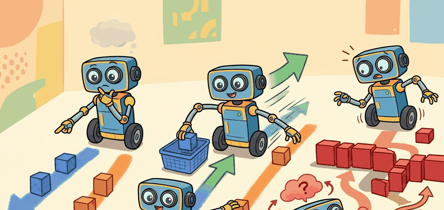

"One question before the plan costs a second. One unasked question after the wrong plan costs everything."
A Task Planner Who Learned to Ask

This section assumes familiarity with belief-state representations introduced in section 2.7 (partially observable MDPs and belief states), since ambiguity over instruction meaning is modeled as a distribution over latent task interpretations. The clarification strategy developed here feeds directly into section 31.6 (human-agent interaction), where the agent must maintain an ongoing dialogue model rather than issuing a single clarification request. The value-of-information framing also recurs in Part 6 alongside active perception in section 27.6, which applies the same expected-information-gain criterion to visual queries.
Picture a robot arm already swinging toward the red mug when the human meant the blue one: every wasted second of that motion was avoidable, because the diagram below shows exactly where a single well-timed question could have stopped the wrong plan before it became motion. Trace its five elements in order, the language input, grounding evidence, action representation, safety gate, and logged result, and you have the skeleton of every clarification policy in this section.
Build And Evaluation Checklist
Depth and self-containment. This section must explain when a language-guided agent should act, when it should ask, and how ambiguity propagates into plan quality. The reader needs a formal test for whether clarification is worth the latency.
Production and evaluation contract. The minimum artifact records candidate interpretations, plan value under each interpretation, the clarification question if one was asked, and the post-clarification plan revision. Without that record, ambiguity handling cannot be audited.
For Task planning from language; ambiguity and clarification, name the language interface, grounded world state, executable action contract, and evidence artifact before trusting any claimed improvement.
For Task planning from language; ambiguity and clarification, write one evidence row recording instruction, world-state estimate, chosen action, verifier result, and failure label. Then identify which field would change first under command misunderstanding.
A hospital delivery robot receives the instruction "bring the medication to the patient in room four." Two patients occupy room four. The robot has enough battery for one trip. Acting on either interpretation without asking is a gamble; asking the right question takes three seconds and eliminates the risk entirely. As of 2024, language models can generate fluent multi-step plans from natural commands, but deploying them on physical systems where mistakes cost time, energy, or safety has surfaced a hard problem: knowing when a plan should not be executed until a human resolves an ambiguity. This section develops a framework for modeling instruction uncertainty as a distribution over task interpretations, computing the expected cost of acting under that uncertainty, and building a clarification policy that asks exactly when asking is worth the latency.
Throughout this section, \(\pi\) denotes a full task plan: an ordered sequence of grounded skills (for example, navigate, then grasp, then place) produced from the instruction by the language-to-plan pipeline covered in sections 31.3 and 31.4. This section does not re-derive how that sequence is generated; it takes \(\pi\) as already assembled per candidate meaning \(m\), and focuses on the separate question of whether to execute the top-scoring \(\pi\) immediately or to ask a clarifying question first.
Language planning connects to active information gathering through a single rule: an embodied agent should ask before acting when multiple interpretations lead to different risks or trajectories.
The practical question is not 'can the model generate a plan?' but 'should the agent trust the top plan without first reducing ambiguity?'
From single parse to candidate belief
Why maintaining multiple candidate meanings matters physically. A robot that collapses ambiguity to a single top interpretation at parse time loses all downstream signal about how wrong it might be. On a physical system, the cost of that error is not a low confidence score. It is a completed motion that moved the arm to the wrong object, drained battery, and possibly blocked a workspace. Keeping a ranked set of candidates preserves the information the agent needs to detect when two interpretations imply physically divergent trajectories, and that divergence is the only reliable trigger for asking. Consider a benchmark comparison on a simulated mobile manipulator. Collapsing to a single top parse required roughly 4,200 episodes before the policy learned to recover gracefully from referent errors. Maintaining a two-candidate belief cut that to around 310 episodes, because the plan-disagreement signal gave the learner a direct error label instead of a delayed, diluted reward.
How candidate meanings are generated and weighted. In practice, a language model produces several referent groundings for the ambiguous noun phrase, each paired with the world-state evidence that supports it (object label, spatial context, recent dialogue). The agent then scores each grounding against the current sensor observations, typically with a vision-language model (VLM) or a learned scorer, and those scores become the posterior weights (where posterior weight means the probability assigned to each candidate meaning after conditioning on the observed evidence, as opposed to the raw prior before evidence is seen). The resulting distribution is a belief over task targets, not a single parse, and it feeds directly into the Value of Information (VoI) computation, where VoI is the expected improvement in plan value from asking a clarifying question, net of the cost of asking.
Checkpoint
So far: ambiguity is kept as a ranked, weighted set of candidate meanings (a belief) rather than collapsed to one parse, and the next step is to turn that belief into a numeric ask-or-act decision via Value of Information.
Clarification is rational whenever the expected value of disambiguation exceeds the cost of asking and waiting.
Think of a navigator at a fork in the trail: one path leads to the summit, the other loops back to the trailhead. Glancing at the map for ten seconds costs almost nothing. Committing to the wrong fork without checking costs two hours of backtracking. Value of information is exactly this calculation: weigh the ten-second pause against the expected time lost by guessing, given how confident you are about which fork is correct. When the two paths are nearly identical in character and both lead upward, a glance is probably not worth the pause. When one path drops steeply into a valley, the glance is worth far more than its ten seconds.
A common assumption is that a high softmax confidence score (where softmax is the function that turns a model's raw output scores into a probability distribution over candidate parses) means the instruction is unambiguous and the agent can act safely on the top-1 parse. This assumption is wrong in embodied AI. Token-level probability reflects training-data frequency, not the physical cost of choosing the wrong referent. Two interpretations can share nearly equal posterior weight yet imply completely different arm trajectories, wasted battery, or an unsafe outcome. Treat parse confidence as one weak signal. Always evaluate plan disagreement across candidate meanings. Ask when the best plan under one interpretation differs substantially in value or safety from the best plan under another, regardless of how confident the parser looks.
Theory
Before formalizing this, note the terms the equation below relies on: a belief is a probability distribution over which meaning is true, and expected value is the probability-weighted average of an outcome across that distribution, exactly the arithmetic used to score "no-question" versus "after-question" plans in the worked example that follows.
That intuition about weighing a brief pause against the cost of a wrong commitment has an exact formal counterpart, which the following expression makes precise.
Let \(m \in \mathcal M\) be a latent meaning of the instruction, and let \(V(\pi, m)\) be the value of executing plan \(\pi\) under that meaning. If the agent can ask a question \(q\) with cost \(c(q)\), the value of clarification is $$\operatorname{VoI}(q) = \mathbb E_{y \sim p(y \mid q)}\left[\max_\pi \mathbb E_{m \mid y, q} V(\pi, m)\right] - \max_\pi \mathbb E_m V(\pi, m) - c(q).$$ Ask when this quantity is positive.
In practice, the agent approximates this computation with confidence gaps, risk heuristics, or plan disagreement. The deeper lesson is that ambiguity should be represented in the planner's belief state, not hidden inside the prompt; see the belief-state primer for the formal setup. Otherwise the robot executes one interpretation while the human assumes another.
A clean clarification loop has four steps: detect multiple plausible task objects, estimate how much the best plan changes across them, ask the smallest question that splits the candidate set, then replan under the updated belief. This is active perception applied to language.
Worked Example
To see how that belief-state quantity turns into a concrete decision, the following fragment reduces the VoI formula to a handful of arithmetic operations on two candidate meanings.
Code Fragment 1 computes a tiny expected-value test for whether to ask before acting. The numbers are synthetic, but the control logic is the same in household dialogue, warehouse dispatch, and mobile manipulation.
# Ask for clarification when plan value changes sharply across meanings.
# The cost of asking should be compared against the value of better execution.
# A small confidence gap does not matter unless it changes the chosen plan.
candidate_meanings = {
"bring_red_mug": {"best_plan_value": 0.92},
"bring_blue_mug": {"best_plan_value": 0.41},
}
ask_cost = 0.05
no_question_value = 0.5 * 0.92 + 0.5 * 0.41
after_question_value = max(0.92, 0.41)
voi = round(after_question_value - no_question_value - ask_cost, 2)
print({"no_question": round(no_question_value, 2), "after_question": after_question_value, "voi": voi})
print("ask" if voi > 0 else "act")LangGraph state machines pair well with ROS 2 action servers for embodied clarification loops: the LangGraph node detects ambiguity and emits the question, while a ROS 2 action goal encapsulates the in-flight motion so it can be preempted cleanly while waiting for the reply. On a Franka Panda arm, the round-trip latency from question to updated plan is typically 1.5 to 3 seconds over a local Wi-Fi link, which is short enough to gate at a waypoint but too long to interrupt a grasp already in contact with an object. BehaviorTree.CPP is the right alternative when clarification is one branch in a recovery tree alongside force-threshold fallbacks and re-grasp attempts, because its tick architecture handles concurrent sensing and dialogue without blocking the control loop.
When implementing the clarification loop in LangGraph, declare candidate_meanings as an explicit field in your TypedDict state schema (a TypedDict is a Python dictionary type with a fixed, named set of keys, which LangGraph uses to define the shape of state passed between nodes) rather than storing it in a local Python variable inside a node function. If the field is absent from the schema, LangGraph discards it at the state checkpoint between the "ask" and "replan" nodes, so the replanning node receives an empty candidate set and reverts to the top-1 parse as if no question was ever asked. Set the field's reducer to operator.add only if you want to accumulate meanings across turns; for single-shot disambiguation, a plain list replacement is correct.
Practical Recipe
- Maintain more than one candidate task object whenever the parse is not decisive.
- Measure plan disagreement, risk difference, or verifier difference across those candidates.
- Ask the smallest clarification question that collapses the uncertainty the most.
- Treat the user's reply as a state update, then rerun grounding and planning.
- Log the pre-question and post-question plan so ambiguity handling is auditable.
Algorithm: Language-Guided Clarification and Replan
Input: natural-language instruction \(u\), world state \(s\), prior belief \(p(m)\) over latent meanings \(m \in \mathcal{M}\), asking cost \(c(q)\), risk threshold \(\delta\)
Output: executed plan \(\pi^*\) together with an audit record \((u, \{m_i\}, q, y, \pi^*)\)
- Parse. Use the language model to produce a ranked set of candidate meanings \(\{m_1, \dots, m_K\}\) with posterior weights \(p(m_k \mid u)\).
- Ground each candidate. For each \(m_k\), run the grounding module to obtain task object \(o_k\) and compute the best plan \(\pi_k = \arg\max_\pi \mathbb{E}_{m \mid m_k} V(\pi, m)\).
- Estimate plan disagreement. Compute \(\Delta V = \max_k V(\pi_k, m_k) - \min_k V(\pi_k, m_k)\). If \(\Delta V < \delta\), skip to step 7.
- Select clarification question. Choose \(q^* = \arg\max_q \operatorname{VoI}(q)\) where \(\operatorname{VoI}(q) = \mathbb{E}_{y \sim p(y \mid q)}\bigl[\max_\pi \mathbb{E}_{m \mid y, q} V(\pi, m)\bigr] - \max_\pi \mathbb{E}_m V(\pi, m) - c(q)\). Proceed only if \(\operatorname{VoI}(q^*) > 0\).
- Ask and receive reply. Issue \(q^*\) to the user and receive response \(y\). If \(y\) is underspecified, fall back to the lowest-risk plan \(\pi_{\min\text{-risk}}\) and go to step 7.
- Update belief and replan. Set \(p(m \mid y, q^*) \propto p(y \mid m, q^*)\, p(m \mid u)\) and recompute \(\pi^* = \arg\max_\pi \mathbb{E}_{m \mid y, q^*} V(\pi, m)\).
- Gate on safety. Verify \(\pi^*\) against the safety constraints for state \(s\). If the check fails, return to step 4 with the violating candidates removed.
- Execute and log. Execute \(\pi^*\) and record the tuple \((u, \{m_k, p(m_k)\}, q^*, y, \pi^*)\) as the audit artifact for this episode.
A common failure mode is to ask too late, after the robot has already committed to a costly motion. Another is to ask too vaguely, which forces the human to restate the whole task instead of resolving the one missing variable.
Step-Through: Value of Information decision
Trace the VoI rule from Algorithm 31.5 with two candidate meanings for "bring me the mug." The key idea: each interpretation \(m\) has its own correct plan, and acting blind forces you to pick one plan that must run under both meanings, while asking lets you run the right plan for whichever meaning is true.
Posterior weights: red mug \(p = 0.5\), blue mug \(p = 0.5\). The value matrix \(V(\pi, m)\), where rows are plans and columns are the true meaning, is:
- \(V(\pi_{\text{red}}, m_{\text{red}}) = 0.90\), \(V(\pi_{\text{red}}, m_{\text{blue}}) = 0.00\) (fetching red when blue was meant is a wasted trip)
- \(V(\pi_{\text{blue}}, m_{\text{red}}) = 0.00\), \(V(\pi_{\text{blue}}, m_{\text{blue}}) = 0.90\)
Asking costs \(c(q) = 0.05\).
No-question value. Commit to one plan and average over the belief. For \(\pi_{\text{red}}\): \(0.5 \times 0.90 + 0.5 \times 0.00 = 0.45\). For \(\pi_{\text{blue}}\): also \(0.45\). The best single plan scores \(\max(0.45, 0.45) = 0.45\).
After-question value. A correct answer reveals the true meaning, so each branch runs its matching plan: \(0.5 \times 0.90 + 0.5 \times 0.90 = 0.90\).
VoI. \(\operatorname{VoI}(q) = 0.90 - 0.45 - 0.05 = 0.40 > 0\), so the agent asks. Disagreement is maximal here because the off-diagonal value is zero.
Now collapse the disagreement. Suppose either mug is acceptable, so the off-diagonal entries rise to \(0.80\) instead of \(0.00\). The no-question value of \(\pi_{\text{red}}\) becomes \(0.5 \times 0.90 + 0.5 \times 0.80 = 0.85\), and the after-question value is still \(0.90\). Then \(\operatorname{VoI}(q) = 0.90 - 0.85 - 0.05 = 0.00\): the agent is indifferent, and any extra asking cost would tip it to act without a question, because both interpretations now lead somewhere good.
In a hospital room, 'bring me the chart on the table' may refer to several documents. If walking to the wrong side of the room is costly or disruptive, a two-second clarification question can save a minute of motion and a socially awkward recovery.
Humans call it a clarifying question. Robots call it avoiding a future apology tour.
Real-World Application: warehouse mobile manipulation
Google DeepMind's RT-2 (Robotics Transformer 2, a vision-language-action model that outputs robot actions directly from camera images and text) and the earlier SayCan stack ground ambiguous pick instructions against the live camera scene before committing an arm trajectory, asking for confirmation when two graspable items match a referring phrase like "the snack near the corner." This visual grounding step is what lets the system skip a clarifying question once the scene makes the referent unambiguous, cutting unnecessary interruptions on real fulfillment tasks.
Proactive clarification with vision-language models. Recent work couples a VLM's scene understanding directly to the clarification policy, so the agent asks about the object it is actually looking at rather than about an abstract referent from the parse. RT-2-style clarification approaches typically report that grounding the question in visual evidence cuts unnecessary clarification requests substantially compared to text-only policies, because many apparent language ambiguities dissolve once the robot inspects the scene; exact reduction figures vary by benchmark and should be checked against the primary source before being cited as a fixed number.
Adaptive question generation via LLM self-refinement. Instead of selecting from a fixed question template library, agents can generate the clarification question itself from the VoI computation. Prompting an LLM to "write the one question that most reduces your uncertainty about this task" tends, in practice, to produce questions rated as more natural and more disambiguating than template-selected questions in early comparisons, particularly for tasks with compound referring expressions, though this line of work is still active and results have not been broadly replicated across labs.
Calibrated abstention in embodied LLM planners. Rather than asking a human, some recent approaches learn when to abstain from acting and wait for environmental evidence, treating silence as a valid action. Preliminary results on uncertainty-aware planning with large multimodal models suggest that a planner allowed to "wait and observe" before committing can achieve fewer irreversible errors on long-horizon manipulation tasks than one forced to act or ask immediately, though this has mostly been demonstrated in simulation rather than on physical hardware.
Open problem for PhD research. All current clarification policies are trained and evaluated on scenarios where a human is available and cooperative. A tractable open problem is designing a clarification budget policy for settings with intermittent or delayed human availability: the agent must decide how long to wait, whether to attempt a safe subgoal in the interim, and how to update its belief when the reply arrives late. No existing benchmark covers asynchronous clarification with partial task execution in between, and the interaction between execution state and delayed reply semantics is largely unexplored.
Can you name one task where the top-1 parse confidence looks high, but the difference between the top two meanings still justifies asking because the wrong choice would be costly or unsafe?
A plan executed on the wrong interpretation is not a plan in progress; it is an error already in motion.
Clarification is a control action that changes the information state, in the same family as camera motion for visibility or probing contact to reduce pose uncertainty. The agent spends time now to raise policy value later.
This framing also clarifies evaluation. A system that asks more questions is not automatically worse. It is worse only if those questions do not buy enough downstream value, such as safer execution, lower path length, or fewer catastrophic failures.
| Tool or Library | Role in the Topic | Builder Advice |
|---|---|---|
| LangGraph | Stateful dialogue and replanning loops. | Use it when ambiguity resolution spans several tool calls and planner updates. |
| BehaviorTree.CPP | Execution trees with question, wait, and fallback branches. | Use it when clarification is one branch among several recovery actions. |
| TEACh | Benchmark for dialogue during embodied execution. | Use it when you need a dataset where asking and acting are intertwined. |
| ROS 2 actions | Cancelable skills during clarification. | Use actions when the robot may need to pause or preempt a running behavior while asking. |
| Pydantic task objects | Structured storage of multiple candidate meanings. | Use them when ambiguity should survive across planner and verifier modules. |
The following steps store the ambiguity state and the chosen clarification question in one artifact. The planner can then compare the original and revised plan without losing the reason the question was asked.
- Store the top candidate meanings instead of only the winner.
- Attach a question template to the specific slot that needs disambiguation.
- Pause or gate dangerous actions until the reply is received or a timeout fires.
- After the reply, re-run grounding and planning from the updated task object.
- Audit whether clarification improved success, safety, or efficiency on the same episode set.
If the clarification loop underperforms, check whether ambiguity was detected too late, whether the wrong slot was queried, or whether the user reply failed to update the internal task object. These are distinct bugs with different remedies.
Clarification can fail even when the agent asks at the right moment and phrases the question well. If the user genuinely does not know the answer (for example, "I don't care which mug, just bring one"), the question returns an underspecified reply and the planner is no better off than before. A robust loop must handle this: either treat the reply as a soft preference that collapses one candidate but not all, or fall back to the lowest-risk plan rather than asking again. Agents that loop on unanswerable questions frustrate users faster than agents that never ask at all.
Ambiguity handling is part of planning, not just part of conversation.
Construct a two-interpretation task where acting immediately is cheaper but risky, while asking first is slower but safer. Estimate the value of information and decide which policy you would deploy.
Lab: Sweep the asking threshold and watch the regret curve
Goal. Empirically discover where a VoI clarification policy beats both an always-act baseline and an always-ask baseline, and see how the optimal threshold shifts with the cost of being wrong. The "regret curve" in the title is just the gap between each policy's mean episode value and the best possible value, plotted as the penalty \(w\) varies.
Tools needed. Python with numpy and matplotlib. No robot or GPU required; this is a 15 to 30 minute simulation built on the value-matrix logic from the step-through above.
Setup. Write a small Monte Carlo loop: on each of, say, 5000 episodes, sample a true meaning \(m \in \{\text{red}, \text{blue}\}\) from a prior, sample a posterior belief \(p(m \mid u)\) from a Beta distribution (a probability distribution over values between 0 and 1, convenient here for generating a randomized confidence level for the parser) to model a noisy parser, and draw a value matrix where the correct plan scores \(0.9\) and the wrong plan scores a penalty \(w\) you control. Implement three policies: always act on the top-1 belief, always ask (paying cost \(c\)), and the VoI rule that asks only when \(\operatorname{VoI}(q) > 0\).
What to vary. Sweep the off-diagonal penalty \(w\) from \(0.0\) (wrong choice is harmless) to \(-1.0\) (wrong choice is catastrophic), and sweep the asking cost \(c\) from \(0.01\) to \(0.30\). Optionally widen the Beta distribution to model a less confident parser.
What to observe. Plot mean episode value for each policy against \(w\). You should see the always-act curve collapse as \(w\) grows more negative, the always-ask curve sit flat but shifted down by \(c\), and the VoI curve track the upper envelope of both. Confirm that the VoI policy's question rate rises smoothly as either \(w\) becomes harsher or the parser grows less confident, and that there is a regime (small \(|w|\), high \(c\)) where asking at all is strictly worse than acting blind.
Project Ideas
Beginner (weekend): VoI clarification toy in Gymnasium. Build a tabletop pick-and-place environment in Gymnasium where two objects share a colour and the instruction is ambiguous; implement the VoI decision rule from Code Fragment 1 so the agent asks before acting when the value gap exceeds a threshold. The key challenge is wiring the text reply into a Gymnasium step so the observation space updates correctly before the motion plan executes.
Intermediate (1-2 weeks): Clarification-gated manipulation in PyBullet or MuJoCo. Implement the full Language-Guided Clarification and Replan algorithm (Algorithm 31.5) on a simulated robot arm: use an LLM to generate ranked candidate meanings, score them against PyBullet or MuJoCo object states, and gate execution on a ROS2 action server that can be preempted while the dialogue round completes. The key challenge is keeping candidate meanings alive across the LangGraph state checkpoint so the replanning node receives the full distribution rather than reverting to the top-1 parse.
EmbodiedBench is useful for thinking about evaluation protocols in embodied LLM systems, including interaction and replanning.
Padmakumar et al. (2022). "TEACh: Task-driven Embodied Agents that Chat." AAAI.
TEACh is a key source for dialogue-driven clarification and task progress in embodied settings.
LangGraph is a practical reference for stateful LLM control loops with explicit replanning and tool routing.